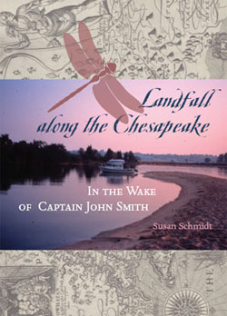

Landfall along the Chesapeake
In her book, Landfall, Susan Schmidt compares the beauty of ancestral legacy and childhood memory to her observations on a 100-day voyage navigating a 22-foot boat. Scientists and waterfront characters share their hopes and despairs for the Bay's fisheries and water quality. Landfall is a cruising guide for Chesapeake boaters and a field log for naturalists. In 2002, Susan Schmidt retraced John Smith's 1608 voyage on the Chesapeake Bay. In Landfall along the Chesapeake she recounts her 2,500-mile, mostly-solo adventure. Her daily ship's log weaves history and science, weather and seamanship. As she circles the Bay counterclockwise from Jamestown, she explores Smith's encounters with Native Americans and the Bay's ecological changes in four hundred years. On each river and creek, she quotes Smith's journals on matching wits with Powhatan, meeting Pocahontas, surviving thunderstorms, ambush, and a stingray barb. Anchored on wild creeks, Schmidt observes swans and dragonflies, lightning and sunsets; in port she interviews colorful characters and working watermen about blue crabs and oysters. Scientists explain the Bay's nitrogen overload, water-level rise, anoxia, Pfiesteria, Kepone, and the Ghost Fleet. Native American chiefs discuss their heritage then and now. Ashore, Schmidt walks on her ancestor's farm, now a military chemical dump, and climbs a great-grandfather's lighthouse. Despite her grief at bad air quality and diminished fisheries, and her dread of high wind and rough seas, Schmidt expresses gratitude for small-town hospitality and the navigation skills her father taught her. On the Chesapeake, Schmidt said, "I encountered angels everywhere."

Susan Schmidt, PhD (252) 269-0032

| © 2012 Susan Schmidt. All Rights Reserved. |
Find Current Book Reading Schedule
 |